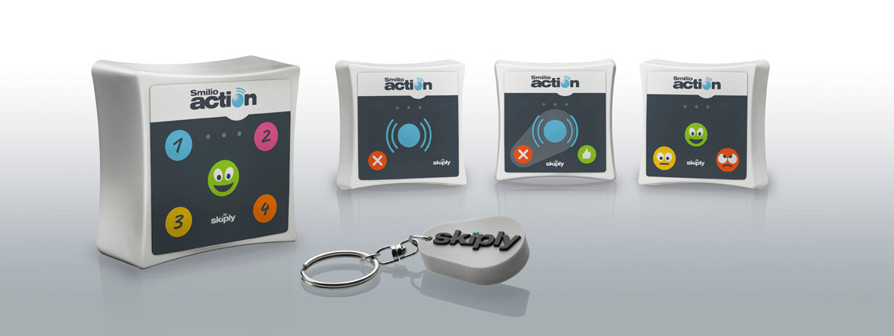

Toggle navigation
Skiply
Simulator
Configurator
Help
FAQ
Videos
How to buy ?
Smilio Action Integrator Tools
Welcome to the Smilio Integrator Tools. Smilio Action is a collection of configurable connected buttons, communicating with both Sigfox and LoRaWAN.

The Simulator will help you to prepare your apps, even without having a Smilio Action Button in your hands.
Use the simulator
The Configurator will help you to setup your Smilio Action with the correct Downlink for your App.
Use the configurator